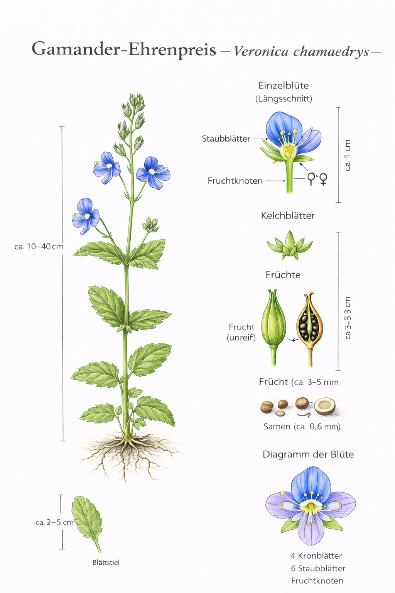

Nr. 4 · Frühblüher der Wiese
Gamander-Ehrenpreis
Veronica chamaedrys
Augen des Himmels – zart, kurzlebig und ein Liebling der Wildbienen.

Augen des Himmels – ein Name mit Geschichte
In der englischen Volkssprache heisst der Gamander-Ehrenpreis ‚Bird's-eye' – Vogelauge. Die strahlend blaue Blüte mit dem weissen Zentrum und den dunklen Adern wirkt tatsächlich wie ein Auge. Die zarten Blüten fallen beim Pflücken sofort ab – weshalb man früher glaubte, sie zu pflücken bringe Unglück. Eine Superstition, die den Wildbienen nützt.
Nur zwei Staubblätter – ein Bestimmungsmerkmal
Die meisten Blüten haben vier oder mehr Staubblätter. Der Ehrenpreis hat genau zwei – ein zuverlässiges Bestimmungsmerkmal, das man einmal gesehen hat und nie vergisst. Carl von Linné verwendete dieses Merkmal als Grundlage für die Gattung Veronica. Die Gattung ist nach der heiligen Veronika benannt.
Wissenswertes & Merksätze
Veronica = Veronika
Benannt nach der heiligen Veronika, die Jesus mit einem Tuch das Gesicht abtrocknete. Das blaue ‚Gesicht' der Blüte inspirierte den Namen.
Kurzlebige Blüten
Jede einzelne Blüte hält nur 1–2 Tage – dafür blüht die Pflanze über Monate lang, immer neue Blüten nachschiebend.
Zwei Staubblätter
Das auffälligste Bestimmungsmerkmal – einmal bemerkt, nie mehr mit anderen Blütenpflanzen verwechselt.